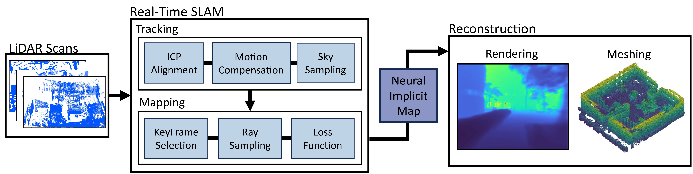

Abstract
TL;DR: We propose LONER, the first real-time LiDAR SLAM algorithm that uses a neural-implicit scene representation.
Existing implicit mapping methods for LiDAR show promising results in large-scale reconstruction, but either require groundtruth poses or run slower than real-time.
In contrast, LONER uses LiDAR data to train an MLP to estimate a dense map in real-time, while simultaneously estimating the trajectory of the sensor.
To achieve real-time performance, this paper proposes a novel information-theoretic loss function that accounts for the fact that different regions of the map may be learned to varying degrees throughout online training.
The proposed method is evaluated qualitatively and quantitatively on two open-source datasets.
This evaluation illustrates that the proposed loss function converges faster and leads to more accurate geometry reconstruction than other loss functions used in depth-supervised neural implicit frameworks.
Finally, this paper shows that LONER estimates trajectories competitively with state-of-the-art LiDAR SLAM methods, while also producing dense maps competitive with existing real-time implicit mapping methods that use groundtruth poses.
System Overview
The system comprises
parallel threads for tracking and mapping. The tracking thread
processes incoming scans and estimates odometry using ICP.
LONER is designed for use without an IMU, so ICP uses the
identity transformation as an initial guess. In parallel and at
a lower rate, the mapping thread uses the current scan and
selected prior scans as KeyFrames, which are used to update
the training of the neural scene representation.
